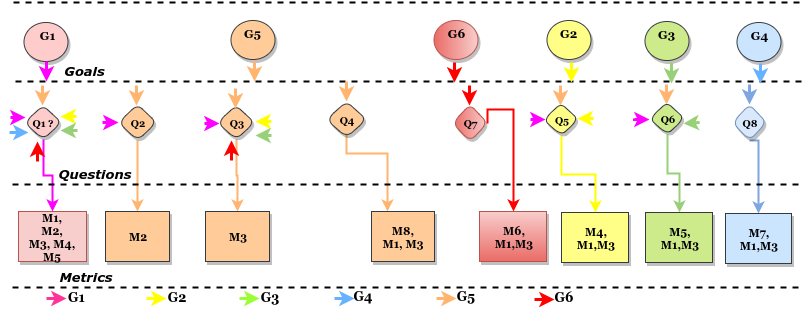

Cloud Education: An Action Research Study Focusing on the Use of Cloud Computing Resources in Undergraduate Computer Science Classes
Cloud computing has been a successful paradigm in its goal to provide remote computing resources in a competitive and scalable way when compared to traditional computing scenarios. Companies have a growing interest in migrating and using cloud services. However, the literature has reported difficulties and challenges faced by companies while migrating their assets to the cloud. One of the possible reasons for this is the difficulty in the identification of qualified professionals to support companies to plan, perform and monitor the migration of their legacy systems to the cloud. This paper presents an action-research study analyzing the inclusion of cloud computing scenarios in the activities of Software Design and Analysis and Operating Systems undergraduate courses at Universidade Salvador (UNIFACS). The results of the action-research study provided initial evidence that cloud computing resources integrated to the contents of the aforementioned courses can contribute to motivate and engage students in activities. In addition, the knowledge and experience gained has the potential to improve the qualification of future professionals to meet the needs of the market related to cloud computing.
Proposed Strategy: Flipped Classroom
Figure 1 The proposed strategy has the goal to create conditions to tailor cloud computing scenarios to be compatible with the two course syllabus. This will enable the alignment of each topic of the course plan with the cloud computing resources/services. We decide to focus on the Operating Systems and System Analysis and Design courses for the following two reasons. The first is the potential to explore the use of cloud resources \cite{mokhtar2013cloud}. The second is the opportunity to illustrate how to perform analysis activities (aiming at characterizing and describing the problem \cite{jackson2000software}). in Figure 1

|
The activities are posted in the Blackboard portal \footnote{http://www.blackboard.com/}. It is a virtual learning environment adopted at Universidade Salvador (UNIFACS) for both face-to-face and distance learning courses. The planned activities for each course are registered in Blackboard. The activities can be reached at \footnote{http://www.sourceminer.org/cloudeducation.html}.

|
Operating Systems Course Features
An operating system (OS) is a large and complex set of system programs that control the various operations of a computer system and provide a collection of services to other (user) programs. The purpose of an operating system involves two key goals: i) Availability of a convenient, easy-to-use, and powerful set of services that are provided to the users and the application programs in the computer system; ii) Management of the computer resources in the most efficient manner\cite{tanenbaum2014modern,silberschatz2014operating,garrido2008principles}. The Ubuntu Linux distribution was adopted as the underlying operating system to perform the planned activities \footnote{https://www.ubuntu.com/}. The reason for this choice is that the Linux Ubuntu distribution is available in several cloud providers such as Google Cloud \footnote{https://cloud.google.com/compute/docs/images} and Google Cloud \footnote{https://aws.amazon.com/marketplace/pp/B01JBL2I8U}. Moreover, this distribution is well known and popular in the open source community \footnote{https://distrowatch.com/dwres.php?resource=popularity}.
Views Example

Figure 3 |

Figure 4 |

Figure 5 |

Figure 6 |

Figure 7 |
Figure 8 |
| 
Figure 9 |

Figure 10 |

Figure 11 |
{kind=link}
{kind=link}